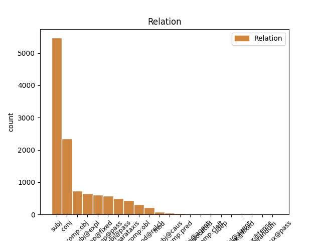
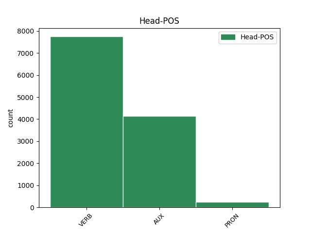
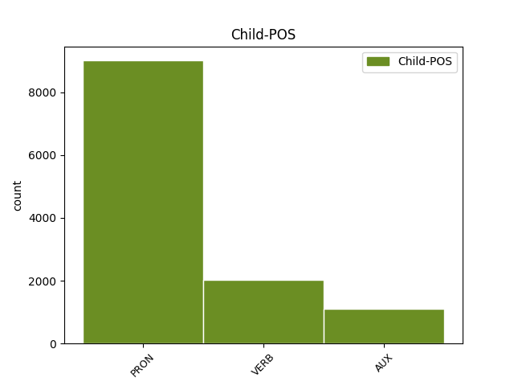

Distribution of features within this leaf



Agreement Rules sorted by frequency.
- When the dependent token is the subject(subj) of the head token,
1 Ce _ _ _ _ 0 _ _ _
2 débutant _ _ _ _ 0 _ _ _
3 de _ _ _ _ 0 _ _ _
4 l' _ _ _ _ 0 _ _ _
5 année _ _ _ _ 0 _ _ _
6 1983 _ _ _ _ 0 _ _ _
7 et _ _ _ _ 0 _ _ _
8 double _ _ _ _ 0 _ _ _
9 All-Star _ _ _ _ 0 _ _ _
10 a _ _ _ _ 0 _ _ _
11 effectué _ _ _ _ 0 _ _ _
12 7 _ _ _ _ 0 _ _ _
13 saisons _ _ _ _ 0 _ _ _
14 à _ _ _ _ 0 _ _ _
15 plus _ _ _ _ 0 _ _ _
16 de _ _ _ _ 0 _ _ _
17 20 _ _ _ _ 0 _ _ _
18 points _ _ _ _ 0 _ _ _
19 de _ _ _ _ 0 _ _ _
20 moyenne _ _ _ _ 0 _ _ _
21 par _ _ _ _ 0 _ _ _
22 match _ _ _ _ 0 _ _ _
23 et _ _ _ _ 0 _ _ _
24 fait _ _ _ _ 0 _ _ _
25 encore _ _ _ _ 0 _ _ _
26 aujourd'hui _ _ _ _ 0 _ _ _
27 partie _ _ _ _ 0 _ _ _
28 de _ _ _ _ 0 _ _ _
29 la _ _ _ _ 0 _ _ _
30 liste _ _ _ _ 0 _ _ _
31 de _ _ _ _ 0 _ _ _
32 les _ _ _ _ 0 _ _ _
33 50 _ _ _ _ 0 _ _ _
34 joueurs _ _ _ _ 0 _ _ _
35 les _ _ _ _ 0 _ _ _
36 plus _ _ _ _ 0 _ _ _
37 prolifiques _ _ _ _ 0 _ _ _
38 de _ _ _ _ 0 _ _ _
39 l' _ _ _ _ 0 _ _ _
40 histoire _ _ _ _ 0 _ _ _
41 de _ _ _ _ 0 _ _ _
42 la _ _ _ _ 0 _ _ _
43 ligue _ _ _ _ 0 _ _ _
44 ( _ _ _ _ 0 _ _ _
45 il il PRON _ Gender=Masc|Number=Sing|Person=3|PronType=Prs 46 subj _ _
46 était être VERB _ Mood=Ind|Number=Sing|Person=3|Tense=Imp|VerbForm=Fin 0 _ _ _
47 en _ _ _ _ 0 _ _ _
48 31 _ _ _ _ 0 _ _ _
49 position _ _ _ _ 0 _ _ _
50 à _ _ _ _ 0 _ _ _
51 le _ _ _ _ 0 _ _ _
52 moment _ _ _ _ 0 _ _ _
53 de _ _ _ _ 0 _ _ _
54 sa _ _ _ _ 0 _ _ _
55 retraite _ _ _ _ 0 _ _ _
56 sportive _ _ _ _ 0 _ _ _
57 ) _ _ _ _ 0 _ _ _
58 . _ _ _ _ 0 _ _ _
1 La _ _ _ _ 0 _ _ _
2 population _ _ _ _ 0 _ _ _
3 est être AUX _ Mood=Ind|Number=Sing|Person=3|Tense=Pres|VerbForm=Fin 0 _ _ _
4 alors _ _ _ _ 0 _ _ _
5 indigène _ _ _ _ 0 _ _ _
6 et _ _ _ _ 0 _ _ _
7 fait faire VERB _ Mood=Ind|Number=Sing|Person=3|Tense=Pres|VerbForm=Fin 3 conj _ _
8 partie _ _ _ _ 0 _ _ _
9 de _ _ _ _ 0 _ _ _
10 les _ _ _ _ 0 _ _ _
11 Nearchi _ _ _ _ 0 _ _ _
12 , _ _ _ _ 0 _ _ _
13 peuple _ _ _ _ 0 _ _ _
14 établi _ _ _ _ 0 _ _ _
15 sur _ _ _ _ 0 _ _ _
16 une _ _ _ _ 0 _ _ _
17 partie _ _ _ _ 0 _ _ _
18 de _ _ _ _ 0 _ _ _
19 la _ _ _ _ 0 _ _ _
20 Crau _ _ _ _ 0 _ _ _
21 et _ _ _ _ 0 _ _ _
22 de _ _ _ _ 0 _ _ _
23 les _ _ _ _ 0 _ _ _
24 Alpilles _ _ _ _ 0 _ _ _
25 . _ _ _ _ 0 _ _ _
1 Il il PRON _ Gender=Masc|Number=Sing|Person=3|PronType=Prs 2 subj@expl _ _
2 est être AUX _ Mood=Ind|Number=Sing|Person=3|Tense=Pres|VerbForm=Fin 0 _ _ _
3 probable _ _ _ _ 0 _ _ _
4 qu' _ _ _ _ 0 _ _ _
5 il _ _ _ _ 0 _ _ _
6 réussira _ _ _ _ 0 _ _ _
7 à _ _ _ _ 0 _ _ _
8 décrocher _ _ _ _ 0 _ _ _
9 la _ _ _ _ 0 _ _ _
10 majorité _ _ _ _ 0 _ _ _
11 relative _ _ _ _ 0 _ _ _
12 lors _ _ _ _ 0 _ _ _
13 de _ _ _ _ 0 _ _ _
14 les _ _ _ _ 0 _ _ _
15 législatives _ _ _ _ 0 _ _ _
16 de _ _ _ _ 0 _ _ _
17 2013 _ _ _ _ 0 _ _ _
18 . _ _ _ _ 0 _ _ _
1 Pour _ _ _ _ 0 _ _ _
2 un _ _ _ _ 0 _ _ _
3 peu _ _ _ _ 0 _ _ _
4 , _ _ _ _ 0 _ _ _
5 l' _ _ _ _ 0 _ _ _
6 on _ _ _ _ 0 _ _ _
7 se se PRON _ Person=3|PronType=Prs 8 comp:obj _ _
8 croirait croire VERB _ Mood=Cnd|Number=Sing|Person=3|Tense=Pres|VerbForm=Fin 0 _ _ _
9 revenu _ _ _ _ 0 _ _ _
10 dans _ _ _ _ 0 _ _ _
11 les _ _ _ _ 0 _ _ _
12 années _ _ _ _ 0 _ _ _
13 50-60 _ _ _ _ 0 _ _ _
14 , _ _ _ _ 0 _ _ _
15 à _ _ _ _ 0 _ _ _
16 le _ _ _ _ 0 _ _ _
17 plus _ _ _ _ 0 _ _ _
18 fort _ _ _ _ 0 _ _ _
19 de _ _ _ _ 0 _ _ _
20 les _ _ _ _ 0 _ _ _
21 mouvements _ _ _ _ 0 _ _ _
22 de _ _ _ _ 0 _ _ _
23 libération _ _ _ _ 0 _ _ _
24 nationale _ _ _ _ 0 _ _ _
25 en _ _ _ _ 0 _ _ _
26 Afrique _ _ _ _ 0 _ _ _
27 et _ _ _ _ 0 _ _ _
28 dans _ _ _ _ 0 _ _ _
29 le _ _ _ _ 0 _ _ _
30 monde _ _ _ _ 0 _ _ _
31 . _ _ _ _ 0 _ _ _
1 Les _ _ _ _ 0 _ _ _
2 bombes _ _ _ _ 0 _ _ _
3 aériennes _ _ _ _ 0 _ _ _
4 se se PRON _ Person=3|PronType=Prs 5 comp@fixed _ _
5 déclinent décliner VERB _ Mood=Ind|Number=Plur|Person=3|Tense=Pres|VerbForm=Fin 0 _ _ _
6 en _ _ _ _ 0 _ _ _
7 un _ _ _ _ 0 _ _ _
8 vaste _ _ _ _ 0 _ _ _
9 gamme _ _ _ _ 0 _ _ _
10 et _ _ _ _ 0 _ _ _
11 des _ _ _ _ 0 _ _ _
12 conceptions _ _ _ _ 0 _ _ _
13 plus _ _ _ _ 0 _ _ _
14 ou _ _ _ _ 0 _ _ _
15 moins _ _ _ _ 0 _ _ _
16 complexes _ _ _ _ 0 _ _ _
17 , _ _ _ _ 0 _ _ _
18 de _ _ _ _ 0 _ _ _
19 les _ _ _ _ 0 _ _ _
20 bombes _ _ _ _ 0 _ _ _
21 gravitaires _ _ _ _ 0 _ _ _
22 à _ _ _ _ 0 _ _ _
23 les _ _ _ _ 0 _ _ _
24 bombes _ _ _ _ 0 _ _ _
25 guidées _ _ _ _ 0 _ _ _
26 , _ _ _ _ 0 _ _ _
27 de _ _ _ _ 0 _ _ _
28 les _ _ _ _ 0 _ _ _
29 bombes _ _ _ _ 0 _ _ _
30 jeté _ _ _ _ 0 _ _ _
31 manuellement _ _ _ _ 0 _ _ _
32 d' _ _ _ _ 0 _ _ _
33 un _ _ _ _ 0 _ _ _
34 aéronef _ _ _ _ 0 _ _ _
35 , _ _ _ _ 0 _ _ _
36 à _ _ _ _ 0 _ _ _
37 les _ _ _ _ 0 _ _ _
38 bombes _ _ _ _ 0 _ _ _
39 qui _ _ _ _ 0 _ _ _
40 ont _ _ _ _ 0 _ _ _
41 besoin _ _ _ _ 0 _ _ _
42 d' _ _ _ _ 0 _ _ _
43 un _ _ _ _ 0 _ _ _
44 véhicule _ _ _ _ 0 _ _ _
45 spécialement _ _ _ _ 0 _ _ _
46 construit _ _ _ _ 0 _ _ _
47 pour _ _ _ _ 0 _ _ _
48 être _ _ _ _ 0 _ _ _
49 larguée _ _ _ _ 0 _ _ _
50 sur _ _ _ _ 0 _ _ _
51 l' _ _ _ _ 0 _ _ _
52 objectif _ _ _ _ 0 _ _ _
53 , _ _ _ _ 0 _ _ _
54 ou _ _ _ _ 0 _ _ _
55 même _ _ _ _ 0 _ _ _
56 peuvent _ _ _ _ 0 _ _ _
57 -être _ _ _ _ 0 _ _ _
58 l' _ _ _ _ 0 _ _ _
59 appareil _ _ _ _ 0 _ _ _
60 lui-même _ _ _ _ 0 _ _ _
61 comme _ _ _ _ 0 _ _ _
62 les _ _ _ _ 0 _ _ _
63 bombes _ _ _ _ 0 _ _ _
64 planantes _ _ _ _ 0 _ _ _
65 , _ _ _ _ 0 _ _ _
66 à _ _ _ _ 0 _ _ _
67 détonation _ _ _ _ 0 _ _ _
68 instantanée _ _ _ _ 0 _ _ _
69 ou _ _ _ _ 0 _ _ _
70 à _ _ _ _ 0 _ _ _
71 retardement _ _ _ _ 0 _ _ _
72 . _ _ _ _ 0 _ _ _
1 L' _ _ _ _ 0 _ _ _
2 île _ _ _ _ 0 _ _ _
3 fait _ _ _ _ 0 _ _ _
4 à _ _ _ _ 0 _ _ _
5 peu _ _ _ _ 0 _ _ _
6 près _ _ _ _ 0 _ _ _
7 1,5 _ _ _ _ 0 _ _ _
8 km _ _ _ _ 0 _ _ _
9 de _ _ _ _ 0 _ _ _
10 long _ _ _ _ 0 _ _ _
11 sur _ _ _ _ 0 _ _ _
12 700 _ _ _ _ 0 _ _ _
13 mètres _ _ _ _ 0 _ _ _
14 de _ _ _ _ 0 _ _ _
15 large _ _ _ _ 0 _ _ _
16 et _ _ _ _ 0 _ _ _
17 s' se PRON _ Person=3|PronType=Prs 18 comp@pass _ SpaceAfter=No
18 élève élever VERB _ Mood=Ind|Number=Sing|Person=3|Tense=Pres|VerbForm=Fin 0 _ _ _
19 jusqu' _ _ _ _ 0 _ _ _
20 à _ _ _ _ 0 _ _ _
21 159 _ _ _ _ 0 _ _ _
22 mètres _ _ _ _ 0 _ _ _
23 d' _ _ _ _ 0 _ _ _
24 altitude _ _ _ _ 0 _ _ _
25 . _ _ _ _ 0 _ _ _
1 Il il PRON _ Gender=Masc|Number=Sing|Person=3|PronType=Prs 2 subj@pass _ _
2 fut être AUX _ Mood=Ind|Number=Sing|Person=3|Tense=Past|VerbForm=Fin 0 _ _ _
3 battu _ _ _ _ 0 _ _ _
4 par _ _ _ _ 0 _ _ _
5 son _ _ _ _ 0 _ _ _
6 rival _ _ _ _ 0 _ _ _
7 colorado _ _ _ _ 0 _ _ _
8 , _ _ _ _ 0 _ _ _
9 Julio _ _ _ _ 0 _ _ _
10 María _ _ _ _ 0 _ _ _
11 Sanguinetti _ _ _ _ 0 _ _ _
12 , _ _ _ _ 0 _ _ _
13 élu _ _ _ _ 0 _ _ _
14 président _ _ _ _ 0 _ _ _
15 , _ _ _ _ 0 _ _ _
16 ce _ _ _ _ 0 _ _ _
17 qui _ _ _ _ 0 _ _ _
18 mettait _ _ _ _ 0 _ _ _
19 fin _ _ _ _ 0 _ _ _
20 à _ _ _ _ 0 _ _ _
21 la _ _ _ _ 0 _ _ _
22 dictature _ _ _ _ 0 _ _ _
23 . _ _ _ _ 0 _ _ _
1 Ce _ _ _ _ 0 _ _ _
2 débutant _ _ _ _ 0 _ _ _
3 de _ _ _ _ 0 _ _ _
4 l' _ _ _ _ 0 _ _ _
5 année _ _ _ _ 0 _ _ _
6 1983 _ _ _ _ 0 _ _ _
7 et _ _ _ _ 0 _ _ _
8 double _ _ _ _ 0 _ _ _
9 All-Star _ _ _ _ 0 _ _ _
10 a _ _ _ _ 0 _ _ _
11 effectué _ _ _ _ 0 _ _ _
12 7 _ _ _ _ 0 _ _ _
13 saisons _ _ _ _ 0 _ _ _
14 à _ _ _ _ 0 _ _ _
15 plus _ _ _ _ 0 _ _ _
16 de _ _ _ _ 0 _ _ _
17 20 _ _ _ _ 0 _ _ _
18 points _ _ _ _ 0 _ _ _
19 de _ _ _ _ 0 _ _ _
20 moyenne _ _ _ _ 0 _ _ _
21 par _ _ _ _ 0 _ _ _
22 match _ _ _ _ 0 _ _ _
23 et _ _ _ _ 0 _ _ _
24 fait faire VERB _ Mood=Ind|Number=Sing|Person=3|Tense=Pres|VerbForm=Fin 0 _ _ _
25 encore _ _ _ _ 0 _ _ _
26 aujourd'hui _ _ _ _ 0 _ _ _
27 partie _ _ _ _ 0 _ _ _
28 de _ _ _ _ 0 _ _ _
29 la _ _ _ _ 0 _ _ _
30 liste _ _ _ _ 0 _ _ _
31 de _ _ _ _ 0 _ _ _
32 les _ _ _ _ 0 _ _ _
33 50 _ _ _ _ 0 _ _ _
34 joueurs _ _ _ _ 0 _ _ _
35 les _ _ _ _ 0 _ _ _
36 plus _ _ _ _ 0 _ _ _
37 prolifiques _ _ _ _ 0 _ _ _
38 de _ _ _ _ 0 _ _ _
39 l' _ _ _ _ 0 _ _ _
40 histoire _ _ _ _ 0 _ _ _
41 de _ _ _ _ 0 _ _ _
42 la _ _ _ _ 0 _ _ _
43 ligue _ _ _ _ 0 _ _ _
44 ( _ _ _ _ 0 _ _ _
45 il _ _ _ _ 0 _ _ _
46 était être VERB _ Mood=Ind|Number=Sing|Person=3|Tense=Imp|VerbForm=Fin 24 parataxis _ _
47 en _ _ _ _ 0 _ _ _
48 31 _ _ _ _ 0 _ _ _
49 position _ _ _ _ 0 _ _ _
50 à _ _ _ _ 0 _ _ _
51 le _ _ _ _ 0 _ _ _
52 moment _ _ _ _ 0 _ _ _
53 de _ _ _ _ 0 _ _ _
54 sa _ _ _ _ 0 _ _ _
55 retraite _ _ _ _ 0 _ _ _
56 sportive _ _ _ _ 0 _ _ _
57 ) _ _ _ _ 0 _ _ _
58 . _ _ _ _ 0 _ _ _
1 Il _ _ _ _ 0 _ _ _
2 en en PRON _ Person=3 3 comp:obl _ _
3 résulte résulter VERB _ Mood=Ind|Number=Sing|Person=3|Tense=Pres|VerbForm=Fin 0 _ _ _
4 que _ _ _ _ 0 _ _ _
5 les _ _ _ _ 0 _ _ _
6 couples _ _ _ _ 0 _ _ _
7 mariés _ _ _ _ 0 _ _ _
8 doivent _ _ _ _ 0 _ _ _
9 souscrire _ _ _ _ 0 _ _ _
10 une _ _ _ _ 0 _ _ _
11 seule _ _ _ _ 0 _ _ _
12 déclaration _ _ _ _ 0 _ _ _
13 qui _ _ _ _ 0 _ _ _
14 regroupe _ _ _ _ 0 _ _ _
15 l' _ _ _ _ 0 _ _ _
16 ensemble _ _ _ _ 0 _ _ _
17 de _ _ _ _ 0 _ _ _
18 leurs _ _ _ _ 0 _ _ _
19 biens _ _ _ _ 0 _ _ _
20 , _ _ _ _ 0 _ _ _
21 droits _ _ _ _ 0 _ _ _
22 et _ _ _ _ 0 _ _ _
23 valeurs _ _ _ _ 0 _ _ _
24 imposables _ _ _ _ 0 _ _ _
25 ainsi _ _ _ _ 0 _ _ _
26 que _ _ _ _ 0 _ _ _
27 ceux _ _ _ _ 0 _ _ _
28 de _ _ _ _ 0 _ _ _
29 leurs _ _ _ _ 0 _ _ _
30 enfants _ _ _ _ 0 _ _ _
31 mineurs _ _ _ _ 0 _ _ _
32 lorsqu' _ _ _ _ 0 _ _ _
33 ils _ _ _ _ 0 _ _ _
34 ont _ _ _ _ 0 _ _ _
35 l' _ _ _ _ 0 _ _ _
36 administration _ _ _ _ 0 _ _ _
37 légale _ _ _ _ 0 _ _ _
38 de _ _ _ _ 0 _ _ _
39 leurs _ _ _ _ 0 _ _ _
40 biens _ _ _ _ 0 _ _ _
41 . _ _ _ _ 0 _ _ _
1 Selon _ _ _ _ 0 _ _ _
2 Elie _ _ _ _ 0 _ _ _
3 Wiesel _ _ _ _ 0 _ _ _
4 , _ _ _ _ 0 _ _ _
5 Jérôme _ _ _ _ 0 _ _ _
6 Lindon _ _ _ _ 0 _ _ _
7 eut _ _ _ _ 0 _ _ _
8 raison _ _ _ _ 0 _ _ _
9 d' _ _ _ _ 0 _ _ _
10 effectuer _ _ _ _ 0 _ _ _
11 ces _ _ _ _ 0 _ _ _
12 raccourcissements _ _ _ _ 0 _ _ _
13 et _ _ _ _ 0 _ _ _
14 remaniements _ _ _ _ 0 _ _ _
15 , _ _ _ _ 0 _ _ _
16 lui-même _ _ _ _ 0 _ _ _
17 « _ _ _ _ 0 _ _ _
18 redout _ _ _ _ 0 _ _ _
19 [ _ _ _ _ 0 _ _ _
20 ant _ _ _ _ 0 _ _ _
21 ] _ _ _ _ 0 _ _ _
22 tout _ _ _ _ 0 _ _ _
23 ce ce PRON _ Number=Sing|Person=3|PronType=Dem 0 _ _ _
24 qui _ _ _ _ 0 _ _ _
25 pouvait pouvoir VERB _ Mood=Ind|Number=Sing|Person=3|Tense=Imp|VerbForm=Fin 23 mod@relcl _ _
26 paraître _ _ _ _ 0 _ _ _
27 superflu _ _ _ _ 0 _ _ _
28 » _ _ _ _ 0 _ _ _
29 : _ _ _ _ 0 _ _ _
30 « _ _ _ _ 0 _ _ _
31 raconter _ _ _ _ 0 _ _ _
32 trop _ _ _ _ 0 _ _ _
33 m' _ _ _ _ 0 _ _ _
34 effrayait _ _ _ _ 0 _ _ _
35 plus _ _ _ _ 0 _ _ _
36 que _ _ _ _ 0 _ _ _
37 de _ _ _ _ 0 _ _ _
38 dire _ _ _ _ 0 _ _ _
39 moins _ _ _ _ 0 _ _ _
40 » _ _ _ _ 0 _ _ _
41 , _ _ _ _ 0 _ _ _
42 expliquerait _ _ _ _ 0 _ _ _
43 -il _ _ _ _ 0 _ _ _
44 dans _ _ _ _ 0 _ _ _
45 la _ _ _ _ 0 _ _ _
46 préface _ _ _ _ 0 _ _ _
47 à _ _ _ _ 0 _ _ _
48 l' _ _ _ _ 0 _ _ _
49 édition _ _ _ _ 0 _ _ _
50 américaine _ _ _ _ 0 _ _ _
51 de _ _ _ _ 0 _ _ _
52 La _ _ _ _ 0 _ _ _
53 Nuit _ _ _ _ 0 _ _ _
54 ( _ _ _ _ 0 _ _ _
55 2006 _ _ _ _ 0 _ _ _
56 ) _ _ _ _ 0 _ _ _
57 . _ _ _ _ 0 _ _ _
1 Gould _ _ _ _ 0 _ _ _
2 lui-même _ _ _ _ 0 _ _ _
3 ne _ _ _ _ 0 _ _ _
4 parvient parvenir VERB _ Mood=Ind|Number=Sing|Person=3|Tense=Pres|VerbForm=Fin 0 _ _ _
5 pas _ _ _ _ 0 _ _ _
6 à _ _ _ _ 0 _ _ _
7 en _ _ _ _ 0 _ _ _
8 observer _ _ _ _ 0 _ _ _
9 un _ _ _ _ 0 _ _ _
10 seul _ _ _ _ 0 _ _ _
11 dans _ _ _ _ 0 _ _ _
12 son _ _ _ _ 0 _ _ _
13 habitat _ _ _ _ 0 _ _ _
14 naturel _ _ _ _ 0 _ _ _
15 tant _ _ _ _ 0 _ _ _
16 il _ _ _ _ 0 _ _ _
17 était être AUX _ Mood=Ind|Number=Sing|Person=3|Tense=Imp|VerbForm=Fin 4 mod _ _
18 déjà _ _ _ _ 0 _ _ _
19 rare _ _ _ _ 0 _ _ _
20 à _ _ _ _ 0 _ _ _
21 le _ _ _ _ 0 _ _ _
22 XIXe _ _ _ _ 0 _ _ _
23 siècle _ _ _ _ 0 _ _ _
24 . _ _ _ _ 0 _ _ _
1 Très _ _ _ _ 0 _ _ _
2 bon _ _ _ _ 0 _ _ _
3 contact _ _ _ _ 0 _ _ _
4 avec _ _ _ _ 0 _ _ _
5 monsieur _ _ _ _ 0 _ _ _
6 Dussau _ _ _ _ 0 _ _ _
7 , _ _ _ _ 0 _ _ _
8 il il PRON _ Gender=Masc|Number=Sing|Person=3|PronType=Prs 9 subj@caus _ _
9 a avoir AUX _ Mood=Ind|Number=Sing|Person=3|Tense=Pres|VerbForm=Fin 0 _ _ _
10 fait _ _ _ _ 0 _ _ _
11 revivre _ _ _ _ 0 _ _ _
12 mon _ _ _ _ 0 _ _ _
13 vieux _ _ _ _ 0 _ _ _
14 piano _ _ _ _ 0 _ _ _
15 . _ _ _ _ 0 _ _ _
1 Le _ _ _ _ 0 _ _ _
2 président _ _ _ _ 0 _ _ _
3 légitime _ _ _ _ 0 _ _ _
4 c' _ _ _ _ 0 _ _ _
5 est _ _ _ _ 0 _ _ _
6 Etienne _ _ _ _ 0 _ _ _
7 Tshisekedi _ _ _ _ 0 _ _ _
8 , _ _ _ _ 0 _ _ _
9 c' _ _ _ _ 0 _ _ _
10 est _ _ _ _ 0 _ _ _
11 pour _ _ _ _ 0 _ _ _
12 lui _ _ _ _ 0 _ _ _
13 que _ _ _ _ 0 _ _ _
14 nous _ _ _ _ 0 _ _ _
15 avons _ _ _ _ 0 _ _ _
16 voté _ _ _ _ 0 _ _ _
17 , _ _ _ _ 0 _ _ _
18 c' _ _ _ _ 0 _ _ _
19 est être AUX _ Mood=Ind|Number=Sing|Person=3|Tense=Pres|VerbForm=Fin 0 _ _ _
20 lui lui PRON _ Number=Sing|Person=3|PronType=Prs 19 comp:pred _ _
21 qui _ _ _ _ 0 _ _ _
22 doit _ _ _ _ 0 _ _ _
23 diriger _ _ _ _ 0 _ _ _
24 le _ _ _ _ 0 _ _ _
25 pays _ _ _ _ 0 _ _ _
26 " _ _ _ _ 0 _ _ _
27 , _ _ _ _ 0 _ _ _
28 a _ _ _ _ 0 _ _ _
29 expliqué _ _ _ _ 0 _ _ _
30 un _ _ _ _ 0 _ _ _
31 opposant _ _ _ _ 0 _ _ _
32 . _ _ _ _ 0 _ _ _
1 En _ _ _ _ 0 _ _ _
2 raison _ _ _ _ 0 _ _ _
3 de _ _ _ _ 0 _ _ _
4 l' _ _ _ _ 0 _ _ _
5 irrégularité _ _ _ _ 0 _ _ _
6 de _ _ _ _ 0 _ _ _
7 son _ _ _ _ 0 _ _ _
8 débit _ _ _ _ 0 _ _ _
9 , _ _ _ _ 0 _ _ _
10 de _ _ _ _ 0 _ _ _
11 la _ _ _ _ 0 _ _ _
12 largeur _ _ _ _ 0 _ _ _
13 de _ _ _ _ 0 _ _ _
14 son _ _ _ _ 0 _ _ _
15 lit _ _ _ _ 0 _ _ _
16 et _ _ _ _ 0 _ _ _
17 de _ _ _ _ 0 _ _ _
18 le _ _ _ _ 0 _ _ _
19 recours _ _ _ _ 0 _ _ _
20 intensif _ _ _ _ 0 _ _ _
21 à _ _ _ _ 0 _ _ _
22 l' _ _ _ _ 0 _ _ _
23 irrigation _ _ _ _ 0 _ _ _
24 pour _ _ _ _ 0 _ _ _
25 la _ _ _ _ 0 _ _ _
26 culture _ _ _ _ 0 _ _ _
27 de _ _ _ _ 0 _ _ _
28 la _ _ _ _ 0 _ _ _
29 vigne _ _ _ _ 0 _ _ _
30 , _ _ _ _ 0 _ _ _
31 de _ _ _ _ 0 _ _ _
32 le _ _ _ _ 0 _ _ _
33 coton _ _ _ _ 0 _ _ _
34 et _ _ _ _ 0 _ _ _
35 de _ _ _ _ 0 _ _ _
36 les _ _ _ _ 0 _ _ _
37 vergers _ _ _ _ 0 _ _ _
38 , _ _ _ _ 0 _ _ _
39 il _ _ _ _ 0 _ _ _
40 arrive arriver VERB _ Mood=Ind|Number=Sing|Person=3|Tense=Pres|VerbForm=Fin 0 _ _ _
41 qu' _ _ _ _ 0 _ _ _
42 en _ _ _ _ 0 _ _ _
43 hiver _ _ _ _ 0 _ _ _
44 et _ _ _ _ 0 _ _ _
45 à _ _ _ _ 0 _ _ _
46 le _ _ _ _ 0 _ _ _
47 printemps _ _ _ _ 0 _ _ _
48 ( _ _ _ _ 0 _ _ _
49 d' _ _ _ _ 0 _ _ _
50 avril _ _ _ _ 0 _ _ _
51 à _ _ _ _ 0 _ _ _
52 décembre _ _ _ _ 0 _ _ _
53 ) _ _ _ _ 0 _ _ _
54 , _ _ _ _ 0 _ _ _
55 il _ _ _ _ 0 _ _ _
56 ne _ _ _ _ 0 _ _ _
57 parvienne parvenir VERB _ Mood=Sub|Number=Sing|Person=3|Tense=Pres|VerbForm=Fin 40 comp:obj@agent _ _
58 pas _ _ _ _ 0 _ _ _
59 jusqu' _ _ _ _ 0 _ _ _
60 à _ _ _ _ 0 _ _ _
61 l' _ _ _ _ 0 _ _ _
62 Océan _ _ _ _ 0 _ _ _
63 Pacifique _ _ _ _ 0 _ _ _
64 . _ _ _ _ 0 _ _ _
1 Le _ _ _ _ 0 _ _ _
2 président _ _ _ _ 0 _ _ _
3 légitime _ _ _ _ 0 _ _ _
4 c' _ _ _ _ 0 _ _ _
5 est _ _ _ _ 0 _ _ _
6 Etienne _ _ _ _ 0 _ _ _
7 Tshisekedi _ _ _ _ 0 _ _ _
8 , _ _ _ _ 0 _ _ _
9 c' _ _ _ _ 0 _ _ _
10 est _ _ _ _ 0 _ _ _
11 pour _ _ _ _ 0 _ _ _
12 lui _ _ _ _ 0 _ _ _
13 que _ _ _ _ 0 _ _ _
14 nous _ _ _ _ 0 _ _ _
15 avons _ _ _ _ 0 _ _ _
16 voté _ _ _ _ 0 _ _ _
17 , _ _ _ _ 0 _ _ _
18 c' _ _ _ _ 0 _ _ _
19 est être AUX _ Mood=Ind|Number=Sing|Person=3|Tense=Pres|VerbForm=Fin 0 _ _ _
20 lui _ _ _ _ 0 _ _ _
21 qui _ _ _ _ 0 _ _ _
22 doit devoir VERB _ Mood=Ind|Number=Sing|Person=3|Tense=Pres|VerbForm=Fin 19 comp:cleft _ _
23 diriger _ _ _ _ 0 _ _ _
24 le _ _ _ _ 0 _ _ _
25 pays _ _ _ _ 0 _ _ _
26 " _ _ _ _ 0 _ _ _
27 , _ _ _ _ 0 _ _ _
28 a _ _ _ _ 0 _ _ _
29 expliqué _ _ _ _ 0 _ _ _
30 un _ _ _ _ 0 _ _ _
31 opposant _ _ _ _ 0 _ _ _
32 . _ _ _ _ 0 _ _ _
1 Ce ce PRON _ Number=Sing|Person=3|PronType=Dem 13 dislocated _ _
2 qui _ _ _ _ 0 _ _ _
3 m' _ _ _ _ 0 _ _ _
4 a _ _ _ _ 0 _ _ _
5 décidé _ _ _ _ 0 _ _ _
6 à _ _ _ _ 0 _ _ _
7 vous _ _ _ _ 0 _ _ _
8 reparler _ _ _ _ 0 _ _ _
9 de _ _ _ _ 0 _ _ _
10 cela _ _ _ _ 0 _ _ _
11 , _ _ _ _ 0 _ _ _
12 c' _ _ _ _ 0 _ _ _
13 est être AUX _ Mood=Ind|Number=Sing|Person=3|Tense=Pres|VerbForm=Fin 0 _ _ _
14 un _ _ _ _ 0 _ _ _
15 texte _ _ _ _ 0 _ _ _
16 de _ _ _ _ 0 _ _ _
17 Rousseau _ _ _ _ 0 _ _ _
18 . _ _ _ _ 0 _ _ _
1 En _ _ _ _ 0 _ _ _
2 plus _ _ _ _ 0 _ _ _
3 d' _ _ _ _ 0 _ _ _
4 apprendre _ _ _ _ 0 _ _ _
5 toutes _ _ _ _ 0 _ _ _
6 les _ _ _ _ 0 _ _ _
7 techniques _ _ _ _ 0 _ _ _
8 de _ _ _ _ 0 _ _ _
9 le _ _ _ _ 0 _ _ _
10 relooking _ _ _ _ 0 _ _ _
11 , _ _ _ _ 0 _ _ _
12 on _ _ _ _ 0 _ _ _
13 apprend apprendre VERB _ Mood=Ind|Number=Sing|Person=3|Tense=Pres|VerbForm=Fin 0 _ _ _
14 aussi _ _ _ _ 0 _ _ _
15 à _ _ _ _ 0 _ _ _
16 se _ _ _ _ 0 _ _ _
17 connaitre _ _ _ _ 0 _ _ _
18 mieux _ _ _ _ 0 _ _ _
19 soi-même _ _ _ _ 0 _ _ _
20 , _ _ _ _ 0 _ _ _
21 ses _ _ _ _ 0 _ _ _
22 goûts _ _ _ _ 0 _ _ _
23 , _ _ _ _ 0 _ _ _
24 son _ _ _ _ 0 _ _ _
25 style _ _ _ _ 0 _ _ _
26 , _ _ _ _ 0 _ _ _
27 son _ _ _ _ 0 _ _ _
28 image _ _ _ _ 0 _ _ _
29 ... _ _ _ _ 0 _ _ _
30 Ce ce PRON _ Number=Sing|Person=3|PronType=Dem 13 udep _ _
31 qui _ _ _ _ 0 _ _ _
32 est _ _ _ _ 0 _ _ _
33 indispensable _ _ _ _ 0 _ _ _
34 dans _ _ _ _ 0 _ _ _
35 ce _ _ _ _ 0 _ _ _
36 métier _ _ _ _ 0 _ _ _
37 . _ _ _ _ 0 _ _ _
1 C' ce PRON _ Number=Sing|Person=3|PronType=Dem 0 _ _ _
2 est être AUX _ Mood=Ind|Number=Sing|Person=3|Tense=Pres|VerbForm=Fin 1 unk@fixed _ _
3 pourquoi _ _ _ _ 0 _ _ _
4 le _ _ _ _ 0 _ _ _
5 positionnement _ _ _ _ 0 _ _ _
6 d' _ _ _ _ 0 _ _ _
7 une _ _ _ _ 0 _ _ _
8 marque _ _ _ _ 0 _ _ _
9 s' _ _ _ _ 0 _ _ _
10 appuie _ _ _ _ 0 _ _ _
11 sur _ _ _ _ 0 _ _ _
12 les _ _ _ _ 0 _ _ _
13 besoins _ _ _ _ 0 _ _ _
14 , _ _ _ _ 0 _ _ _
15 les _ _ _ _ 0 _ _ _
16 attentes _ _ _ _ 0 _ _ _
17 fondamentales _ _ _ _ 0 _ _ _
18 , _ _ _ _ 0 _ _ _
19 conscientes _ _ _ _ 0 _ _ _
20 ou _ _ _ _ 0 _ _ _
21 non _ _ _ _ 0 _ _ _
22 de _ _ _ _ 0 _ _ _
23 les _ _ _ _ 0 _ _ _
24 consommateurs _ _ _ _ 0 _ _ _
25 définis _ _ _ _ 0 _ _ _
26 par _ _ _ _ 0 _ _ _
27 le _ _ _ _ 0 _ _ _
28 marketing _ _ _ _ 0 _ _ _
29 mix _ _ _ _ 0 _ _ _
30 ( _ _ _ _ 0 _ _ _
31 Marketing _ _ _ _ 0 _ _ _
32 mix _ _ _ _ 0 _ _ _
33 ) _ _ _ _ 0 _ _ _
34 . _ _ _ _ 0 _ _ _
1 Merci _ _ _ _ 0 _ _ _
2 à _ _ _ _ 0 _ _ _
3 l' _ _ _ _ 0 _ _ _
4 organisme _ _ _ _ 0 _ _ _
5 de _ _ _ _ 0 _ _ _
6 formation _ _ _ _ 0 _ _ _
7 option _ _ _ _ 0 _ _ _
8 formation _ _ _ _ 0 _ _ _
9 qui _ _ _ _ 0 _ _ _
10 m' _ _ _ _ 0 _ _ _
11 a avoir AUX _ Mood=Ind|Number=Sing|Person=3|Tense=Pres|VerbForm=Fin 0 _ _ _
12 permit permettre VERB _ Mood=Ind|Number=Sing|Person=3|Tense=Past|VerbForm=Fin 11 comp:aux@tense _ _
13 de _ _ _ _ 0 _ _ _
14 récupérer _ _ _ _ 0 _ _ _
15 mes _ _ _ _ 0 _ _ _
16 points _ _ _ _ 0 _ _ _
17 de _ _ _ _ 0 _ _ _
18 permis _ _ _ _ 0 _ _ _
19 . _ _ _ _ 0 _ _ _
1 » _ _ _ _ 0 _ _ _
2 Courant _ _ _ _ 0 _ _ _
3 d' _ _ _ _ 0 _ _ _
4 un _ _ _ _ 0 _ _ _
5 foyer _ _ _ _ 0 _ _ _
6 juif _ _ _ _ 0 _ _ _
7 à _ _ _ _ 0 _ _ _
8 l' _ _ _ _ 0 _ _ _
9 autre _ _ _ _ 0 _ _ _
10 « _ _ _ _ 0 _ _ _
11 pour _ _ _ _ 0 _ _ _
12 vous _ _ _ _ 0 _ _ _
13 raconter _ _ _ _ 0 _ _ _
14 ma _ _ _ _ 0 _ _ _
15 mort _ _ _ _ 0 _ _ _
16 » _ _ _ _ 0 _ _ _
17 , _ _ _ _ 0 _ _ _
18 il _ _ _ _ 0 _ _ _
19 leur _ _ _ _ 0 _ _ _
20 apprend _ _ _ _ 0 _ _ _
21 le _ _ _ _ 0 _ _ _
22 destin _ _ _ _ 0 _ _ _
23 de _ _ _ _ 0 _ _ _
24 le _ _ _ _ 0 _ _ _
25 train _ _ _ _ 0 _ _ _
26 de _ _ _ _ 0 _ _ _
27 les _ _ _ _ 0 _ _ _
28 déportés _ _ _ _ 0 _ _ _
29 : _ _ _ _ 0 _ _ _
30 pris _ _ _ _ 0 _ _ _
31 en _ _ _ _ 0 _ _ _
32 charge _ _ _ _ 0 _ _ _
33 par _ _ _ _ 0 _ _ _
34 la _ _ _ _ 0 _ _ _
35 Gestapo _ _ _ _ 0 _ _ _
36 , _ _ _ _ 0 _ _ _
37 la _ _ _ _ 0 _ _ _
38 police _ _ _ _ 0 _ _ _
39 secrète _ _ _ _ 0 _ _ _
40 allemande _ _ _ _ 0 _ _ _
41 , _ _ _ _ 0 _ _ _
42 après _ _ _ _ 0 _ _ _
43 avoir _ _ _ _ 0 _ _ _
44 traversé _ _ _ _ 0 _ _ _
45 la _ _ _ _ 0 _ _ _
46 frontière _ _ _ _ 0 _ _ _
47 polonaise _ _ _ _ 0 _ _ _
48 , _ _ _ _ 0 _ _ _
49 les _ _ _ _ 0 _ _ _
50 Juifs _ _ _ _ 0 _ _ _
51 furent _ _ _ _ 0 _ _ _
52 menés _ _ _ _ 0 _ _ _
53 en _ _ _ _ 0 _ _ _
54 camions _ _ _ _ 0 _ _ _
55 dans _ _ _ _ 0 _ _ _
56 la _ _ _ _ 0 _ _ _
57 forêt _ _ _ _ 0 _ _ _
58 de _ _ _ _ 0 _ _ _
59 Galicie _ _ _ _ 0 _ _ _
60 , _ _ _ _ 0 _ _ _
61 près _ _ _ _ 0 _ _ _
62 de _ _ _ _ 0 _ _ _
63 Kolomaye _ _ _ _ 0 _ _ _
64 , _ _ _ _ 0 _ _ _
65 où _ _ _ _ 0 _ _ _
66 on _ _ _ _ 0 _ _ _
67 leur lui PRON _ Number=Plur|Person=3|PronType=Prs 68 comp:obl@agent _ _
68 fit faire AUX _ Mood=Ind|Number=Sing|Person=3|Tense=Past|VerbForm=Fin 0 _ _ _
69 creuser _ _ _ _ 0 _ _ _
70 de _ _ _ _ 0 _ _ _
71 larges _ _ _ _ 0 _ _ _
72 fosses _ _ _ _ 0 _ _ _
73 . _ _ _ _ 0 _ _ _
1 Elle _ _ _ _ 0 _ _ _
2 était _ _ _ _ 0 _ _ _
3 mariée _ _ _ _ 0 _ _ _
4 depuis _ _ _ _ 0 _ _ _
5 un _ _ _ _ 0 _ _ _
6 an _ _ _ _ 0 _ _ _
7 avant _ _ _ _ 0 _ _ _
8 qu' _ _ _ _ 0 _ _ _
9 elle _ _ _ _ 0 _ _ _
10 ne _ _ _ _ 0 _ _ _
11 se se PRON _ Person=3|PronType=Prs 12 reparandum _ _
12 soit être AUX _ Mood=Sub|Number=Sing|Person=3|Tense=Pres|VerbForm=Fin 0 _ _ _
13 tombée _ _ _ _ 0 _ _ _
14 amoureuse _ _ _ _ 0 _ _ _
15 d' _ _ _ _ 0 _ _ _
16 Amy _ _ _ _ 0 _ _ _
17 Loder _ _ _ _ 0 _ _ _
18 , _ _ _ _ 0 _ _ _
19 sa _ _ _ _ 0 _ _ _
20 partenaire _ _ _ _ 0 _ _ _
21 actuelle _ _ _ _ 0 _ _ _
22 . _ _ _ _ 0 _ _ _
1 La _ _ _ _ 0 _ _ _
2 Lettonie _ _ _ _ 0 _ _ _
3 et _ _ _ _ 0 _ _ _
4 la _ _ _ _ 0 _ _ _
5 Lituanie _ _ _ _ 0 _ _ _
6 seront _ _ _ _ 0 _ _ _
7 représentées _ _ _ _ 0 _ _ _
8 par _ _ _ _ 0 _ _ _
9 leur _ _ _ _ 0 _ _ _
10 président _ _ _ _ 0 _ _ _
11 et _ _ _ _ 0 _ _ _
12 la _ _ _ _ 0 _ _ _
13 Suède _ _ _ _ 0 _ _ _
14 le le PRON _ Gender=Masc|Number=Sing|Person=3|PronType=Prs 15 comp:aux@pass _ _
15 sera être AUX _ Mood=Ind|Number=Sing|Person=3|Tense=Fut|VerbForm=Fin 0 _ _ _
16 plus _ _ _ _ 0 _ _ _
17 symboliquement _ _ _ _ 0 _ _ _
18 par _ _ _ _ 0 _ _ _
19 son _ _ _ _ 0 _ _ _
20 roi _ _ _ _ 0 _ _ _
21 Carl _ _ _ _ 0 _ _ _
22 XVI _ _ _ _ 0 _ _ _
23 Gustaf _ _ _ _ 0 _ _ _
24 . _ _ _ _ 0 _ _ _
Disagree Examples:
1 Tout _ _ _ _ 0 _ _ _
2 ceci _ _ _ _ 0 _ _ _
3 nous lui PRON _ Number=Plur|Person=1|PronType=Prs 4 comp:obl _ _
4 conduit conduire VERB _ Mood=Ind|Number=Sing|Person=3|Tense=Pres|VerbForm=Fin 0 _ _ _
5 à _ _ _ _ 0 _ _ _
6 le _ _ _ _ 0 _ _ _
7 désagréable _ _ _ _ 0 _ _ _
8 sentiment _ _ _ _ 0 _ _ _
9 que _ _ _ _ 0 _ _ _
10 l' _ _ _ _ 0 _ _ _
11 économie _ _ _ _ 0 _ _ _
12 mondiale _ _ _ _ 0 _ _ _
13 se _ _ _ _ 0 _ _ _
14 dirige _ _ _ _ 0 _ _ _
15 tout _ _ _ _ 0 _ _ _
16 droit _ _ _ _ 0 _ _ _
17 vers _ _ _ _ 0 _ _ _
18 la _ _ _ _ 0 _ _ _
19 déflation _ _ _ _ 0 _ _ _
20 . _ _ _ _ 0 _ _ _
1 Il _ _ _ _ 0 _ _ _
2 faut _ _ _ _ 0 _ _ _
3 attendre _ _ _ _ 0 _ _ _
4 1527 _ _ _ _ 0 _ _ _
5 pour _ _ _ _ 0 _ _ _
6 que _ _ _ _ 0 _ _ _
7 nous lui PRON _ Number=Plur|Person=1|PronType=Prs 8 comp:obl _ _
8 parvienne parvenir VERB _ Mood=Sub|Number=Sing|Person=3|Tense=Pres|VerbForm=Fin 0 _ _ _
9 le _ _ _ _ 0 _ _ _
10 plus _ _ _ _ 0 _ _ _
11 ancien _ _ _ _ 0 _ _ _
12 texte _ _ _ _ 0 _ _ _
13 , _ _ _ _ 0 _ _ _
14 écrit _ _ _ _ 0 _ _ _
15 par _ _ _ _ 0 _ _ _
16 Jan _ _ _ _ 0 _ _ _
17 Ymbrechts _ _ _ _ 0 _ _ _
18 -- _ _ _ _ 0 _ _ _
19 sacristain _ _ _ _ 0 _ _ _
20 d' _ _ _ _ 0 _ _ _
21 Evere _ _ _ _ 0 _ _ _
22 -- _ _ _ _ 0 _ _ _
23 , _ _ _ _ 0 _ _ _
24 concernant _ _ _ _ 0 _ _ _
25 l' _ _ _ _ 0 _ _ _
26 adjudication _ _ _ _ 0 _ _ _
27 d' _ _ _ _ 0 _ _ _
28 un _ _ _ _ 0 _ _ _
29 nouveau _ _ _ _ 0 _ _ _
30 chœur _ _ _ _ 0 _ _ _
31 à _ _ _ _ 0 _ _ _
32 cette _ _ _ _ 0 _ _ _
33 église _ _ _ _ 0 _ _ _
34 . _ _ _ _ 0 _ _ _
1 Nous _ _ _ _ 0 _ _ _
2 appelons appeler VERB _ Mood=Ind|Number=Plur|Person=1|Tense=Pres|VerbForm=Fin 0 _ _ _
3 son _ _ _ _ 0 _ _ _
4 fils _ _ _ _ 0 _ _ _
5 Raymond _ _ _ _ 0 _ _ _
6 , _ _ _ _ 0 _ _ _
7 comme _ _ _ _ 0 _ _ _
8 étant _ _ _ _ 0 _ _ _
9 le _ _ _ _ 0 _ _ _
10 second _ _ _ _ 0 _ _ _
11 Raymond _ _ _ _ 0 _ _ _
12 de _ _ _ _ 0 _ _ _
13 Caussade _ _ _ _ 0 _ _ _
14 , _ _ _ _ 0 _ _ _
15 seigneur _ _ _ _ 0 _ _ _
16 de _ _ _ _ 0 _ _ _
17 Calvignac _ _ _ _ 0 _ _ _
18 ) _ _ _ _ 0 _ _ _
19 , _ _ _ _ 0 _ _ _
20 les _ _ _ _ 0 _ _ _
21 terres _ _ _ _ 0 _ _ _
22 de _ _ _ _ 0 _ _ _
23 Calvignac _ _ _ _ 0 _ _ _
24 et _ _ _ _ 0 _ _ _
25 recevait recevoir VERB _ Mood=Ind|Number=Sing|Person=3|Tense=Imp|VerbForm=Fin 2 conj _ _
26 les _ _ _ _ 0 _ _ _
27 reconnaissances _ _ _ _ 0 _ _ _
28 de _ _ _ _ 0 _ _ _
29 les _ _ _ _ 0 _ _ _
30 feudataires _ _ _ _ 0 _ _ _
31 ( _ _ _ _ 0 _ _ _
32 En _ _ _ _ 0 _ _ _
33 1377 _ _ _ _ 0 _ _ _
34 , _ _ _ _ 0 _ _ _
35 il _ _ _ _ 0 _ _ _
36 hommageait _ _ _ _ 0 _ _ _
37 à _ _ _ _ 0 _ _ _
38 l' _ _ _ _ 0 _ _ _
39 abbé _ _ _ _ 0 _ _ _
40 de _ _ _ _ 0 _ _ _
41 Moissac _ _ _ _ 0 _ _ _
42 pour _ _ _ _ 0 _ _ _
43 le _ _ _ _ 0 _ _ _
44 château _ _ _ _ 0 _ _ _
45 de _ _ _ _ 0 _ _ _
46 Durfort _ _ _ _ 0 _ _ _
47 ) _ _ _ _ 0 _ _ _
48 . _ _ _ _ 0 _ _ _
1 Nous _ _ _ _ 0 _ _ _
2 appelons appeler VERB _ Mood=Ind|Number=Plur|Person=1|Tense=Pres|VerbForm=Fin 0 _ _ _
3 son _ _ _ _ 0 _ _ _
4 fils _ _ _ _ 0 _ _ _
5 Raymond _ _ _ _ 0 _ _ _
6 , _ _ _ _ 0 _ _ _
7 comme _ _ _ _ 0 _ _ _
8 étant _ _ _ _ 0 _ _ _
9 le _ _ _ _ 0 _ _ _
10 second _ _ _ _ 0 _ _ _
11 Raymond _ _ _ _ 0 _ _ _
12 de _ _ _ _ 0 _ _ _
13 Caussade _ _ _ _ 0 _ _ _
14 , _ _ _ _ 0 _ _ _
15 seigneur _ _ _ _ 0 _ _ _
16 de _ _ _ _ 0 _ _ _
17 Calvignac _ _ _ _ 0 _ _ _
18 ) _ _ _ _ 0 _ _ _
19 , _ _ _ _ 0 _ _ _
20 les _ _ _ _ 0 _ _ _
21 terres _ _ _ _ 0 _ _ _
22 de _ _ _ _ 0 _ _ _
23 Calvignac _ _ _ _ 0 _ _ _
24 et _ _ _ _ 0 _ _ _
25 recevait _ _ _ _ 0 _ _ _
26 les _ _ _ _ 0 _ _ _
27 reconnaissances _ _ _ _ 0 _ _ _
28 de _ _ _ _ 0 _ _ _
29 les _ _ _ _ 0 _ _ _
30 feudataires _ _ _ _ 0 _ _ _
31 ( _ _ _ _ 0 _ _ _
32 En _ _ _ _ 0 _ _ _
33 1377 _ _ _ _ 0 _ _ _
34 , _ _ _ _ 0 _ _ _
35 il _ _ _ _ 0 _ _ _
36 hommageait hommager VERB _ Mood=Ind|Number=Sing|Person=3|Tense=Imp|VerbForm=Fin 2 parataxis _ _
37 à _ _ _ _ 0 _ _ _
38 l' _ _ _ _ 0 _ _ _
39 abbé _ _ _ _ 0 _ _ _
40 de _ _ _ _ 0 _ _ _
41 Moissac _ _ _ _ 0 _ _ _
42 pour _ _ _ _ 0 _ _ _
43 le _ _ _ _ 0 _ _ _
44 château _ _ _ _ 0 _ _ _
45 de _ _ _ _ 0 _ _ _
46 Durfort _ _ _ _ 0 _ _ _
47 ) _ _ _ _ 0 _ _ _
48 . _ _ _ _ 0 _ _ _
1 Un _ _ _ _ 0 _ _ _
2 grand _ _ _ _ 0 _ _ _
3 choix _ _ _ _ 0 _ _ _
4 de _ _ _ _ 0 _ _ _
5 livres _ _ _ _ 0 _ _ _
6 , _ _ _ _ 0 _ _ _
7 les _ _ _ _ 0 _ _ _
8 tarifs _ _ _ _ 0 _ _ _
9 varient _ _ _ _ 0 _ _ _
10 beaucoup _ _ _ _ 0 _ _ _
11 mais _ _ _ _ 0 _ _ _
12 il _ _ _ _ 0 _ _ _
13 faut _ _ _ _ 0 _ _ _
14 prendre _ _ _ _ 0 _ _ _
15 le _ _ _ _ 0 _ _ _
16 temps _ _ _ _ 0 _ _ _
17 de _ _ _ _ 0 _ _ _
18 regarder _ _ _ _ 0 _ _ _
19 et _ _ _ _ 0 _ _ _
20 dénicher _ _ _ _ 0 _ _ _
21 le _ _ _ _ 0 _ _ _
22 livre _ _ _ _ 0 _ _ _
23 qui _ _ _ _ 0 _ _ _
24 vous le PRON _ Number=Plur|Person=2|PronType=Prs 25 comp:obj _ _
25 passionnera passionner VERB _ Mood=Ind|Number=Sing|Person=3|Tense=Fut|VerbForm=Fin 0 _ _ _
26 . _ _ _ _ 0 _ _ _